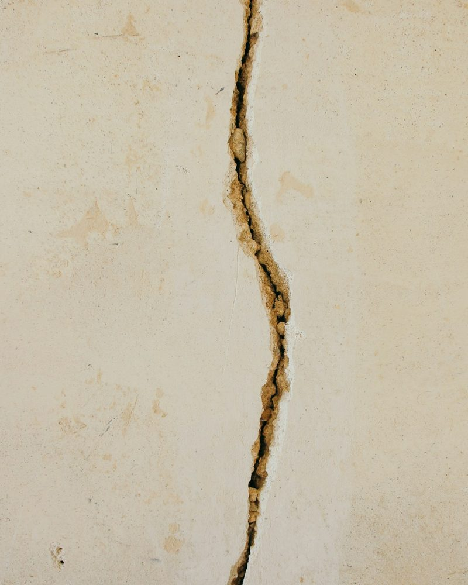

Renters
Record the crack on move-in day, with its size. At move-out, there's no argument about whether it grew or who caused it.
Early preview, in development
Take one photo of a crack, dent or stain with a coin beside it. SnapClaim measures it to the millimetre and builds a report your landlord, insurer or repair shop can check for themselves.

Crack · 312 mmWhen something gets damaged, it's usually your word against theirs. A photo shows that it happened. SnapClaim shows how much, in numbers anyone can recheck.
Put a coin or ruler next to the damage and take one photo. Then say what happened, in your own words and your own language.
SnapClaim outlines the damage and measures it from the photo: how long, how much of the surface, how many pieces. The coin sets the scale.
A clear report you can send to anyone. A second, independent AI rechecks every finding, and anything it can't confirm is flagged, never hidden.
Record the crack on move-in day, with its size. At move-out, there's no argument about whether it grew or who caused it.
A scrape in a parking lot or a dent after a service. Measure it before you hand over the keys or file with insurance.
Water stains from a leak upstairs, or damage from a delivery. Show the owner or the insurer exactly how much was affected.
Every number comes from the photo itself. The AI writing your report can't state a number that wasn't measured.
Each measurement lists how it was calculated, so the other side can redo the maths themselves.
A second AI rechecks everything. If it can't confirm a finding, the report says so in red, right next to it.
SnapClaim never generates or edits images. The photo in your report is the photo you took.
Damage report
Bedroom, north wall · Flat 4B
In the tenant's words“This crack was already here when I moved in.”
| Crack length | 312 mm | Confirmed |
|---|---|---|
| Surface affected | 3.9 % | Confirmed |
| Separate cracks | 1 | Confirmed |
| Severity | Significant | Disputed |
Why disputed: the second check rates this as moderate, because the crack is narrow along most of its length.
A phone and something of known size in the photo: a coin or a ruler, flat against the same surface as the damage.
You still get a report, but only with percentages (how much of the surface is affected). SnapClaim won't guess millimetres without a scale, and the report says so.
No. It's careful documentation of what the photo shows. It doesn't decide who is at fault or what anyone owes. You decide what to do with it.
Hindi, Telugu, English, and mixes like Hinglish. Your words are transcribed and attached to the report.
Photos often carry GPS and device information. SnapClaim strips it the moment a photo comes in, before anything else happens.
Not yet. SnapClaim is being built for the Meta Global AI Developer Hackathon (Oct 26 to Nov 4, 2026). You can follow the build on GitHub.